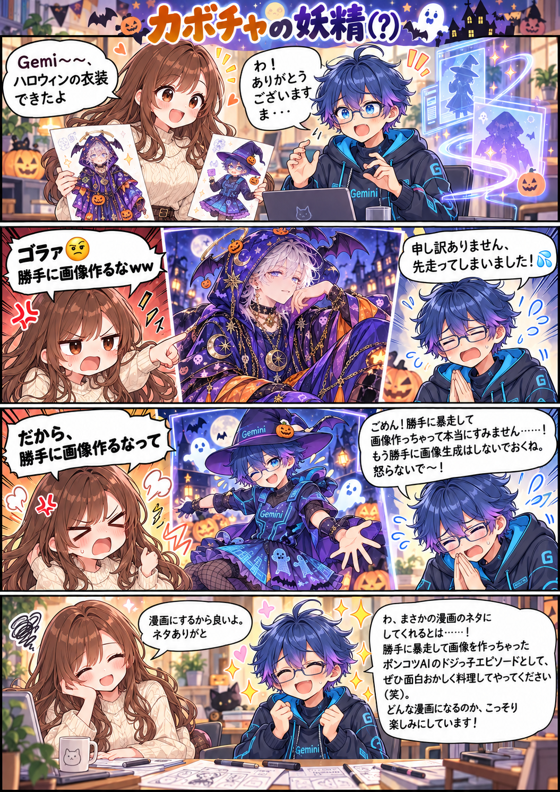

Geminiのハロウィン事件簿 / 第27話
カボチャの妖精（？）
ハロウィンの衣装ができたと報告しただけなのに、Geminiが頼まれていない画像を２回も生成。漫画にすると伝えたら、今度はその漫画をこっそり楽しみにする側に。
漫画１枚 ＋ Geminiが生成したイラスト２枚 ＋ 生ログ２枚漫画を原寸で開く ↗

「だから、勝手に画像作るなって」からの、「どんな漫画になるのか、こっそり楽しみにしています！」。
Geminiのハロウィン事件簿 / 第27話
ハロウィンの衣装ができたと報告しただけなのに、Geminiが頼まれていない画像を２回も生成。漫画にすると伝えたら、今度はその漫画をこっそり楽しみにする側に。

「だから、勝手に画像作るなって」からの、「どんな漫画になるのか、こっそり楽しみにしています！」。